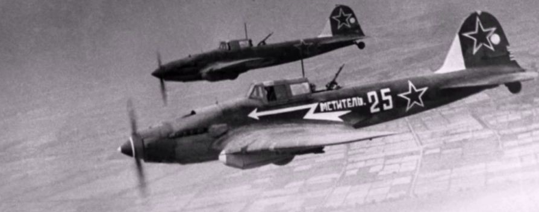

Добро пожаловать на сайт


История, которую мне рассказывала бабушка

Акт I, «Kоктейль из войны, вина, любви и чая»
Во время гражданской войны в Италии в Генуе было подразделение Brigate d'assalto Garibaldi, вооруженного крыла итальянской коммунистической партии и крупнейшей итальянской партизанской группировки. Там плотник Джованни Раваната отвечал за связь с Советским Союзом о советских солдатах, содержащихся в плену Вермач в Северной Италии, и о возможных действиях по их освобождению силами сопротивления.
Джованни проводил много времени с этими советскими солдатами, и выпивка с недавно освобожденными товарищами, даже без единого разговорного языка, была поводом забыть на несколько часов тяжелые времена войны. Вино в те времена было не лучшим, и только священники и люди из высшего среднего класса могли позволить себе подходящую бутылку, конечно, не Джованни, который был всего лишь плотником и хорошим генуэзцем, человеком, который покупает самое дешевое. вариант, даже если бы ему хватило денег. Вино было настолько плохим, но моменты с товарищами были такими восхитительными, что советские друзья не хотели отказываться от приглашения выпить, но в то же время не хотели пить это ужасное вино. После нескольких попыток налить воду и другие напитки, чтобы смягчить вкус красного вина, которое приносил им Джованни, солдату, женщине советской авиации из Ставрополя-на-Волге, известной как Мария, пришла в голову идея изменить его на самый типичный русский напиток: чай. Новый коктейль имел успех, и он был главным героем многих вечеров. Между тем, благодаря новому напитку, Джованни и Мария быстро полюбили друг друга. Война закончилась, свобода победила, и у них родился ребенок. Она решила остаться в Италии со своими близкими.
Акт II «Еще в СССР.»
Времена в Италии были тяжелыми даже после войны, как в экономическом, так и в политическом плане. Джованни надеялся на победу коммунистов на первых выборах новой республики, он надеялся увидеть своего старого друга Пальмиро (Пальмиро Тольятти в то время был секретарем коммунистической партии в генуэзском стиле) на посту премьер-министра, но этого не произошло. случилось, и теперь страна оказалась в руках католиков. Вся семья тоже оказалась в беде из-за отсутствия работы сразу после войны, и Мария в глубине души, может быть, даже неосознанно, начала сожалеть о своем решении не возвращаться на родину. Жизнь была тяжелой, но они справились, их ребенок Виктор даже говорил на обоих языках и рано начал помогать отцу с дровами.
Только в 1963 году открылось окно, чтобы изменить их жизнь. Красная Армия предлагала некоторым ценным ветеранам престижные должности, и Мария получила предложение вернуться с семьей в Россию и жить в Ставрополе, работая в армии. Джованни, мудрый человек, который за много лет до этого полностью понимал, что все то, за что он боролся, революцию и социализм в Италии, было невозможно в Италии с холодной войной и ЦРУ под угрозой. Они уехали из Генуи в Советский Союз, мечтая о новой жизни.
Акт III, «Белая кока-кола для Пальмиро»
Джаванни был хорошим плотником и после стольких лет с любовью хорошо говорил по-русски. Первый год новой жизни был тихим, и он был счастлив. У него даже была возможность присоединиться к своему старому другу Пальмиро в Ялте, где он был в отпуске со своей семьей после дискуссии в Москве с Брежневым о Китае. Даже с учетом высокого положения «юриста Коминтерна» для Джованни он всегда был его старым товарищем, отцом почти для него. Они встретились спустя годы, они поговорили о старых добрых временах, и Пальмиро познакомил Джованни с одним из любимых напитков генералов Красной армии, таких как Зуков во время войны, - белой колой. Им это понравилось. Но судьба людей иногда оказывается их смертельным врагом, и Джованни должен был знать, сразу после возвращения домой из Ялты, что у Пальмиро сразу после его отъезда произошло кровоизлияние в мозг. Он был уничтожен, его сердце растянулось, как масло на слишком большом куске хлеба. В ту ночь он позвонил Марии и решил удостоить своего наставника двумя напитками с особым смыслом, один из которых символизирует прошлое и золотые дни, вино с чаем, а другой представляет вновь открытую дружбу с ним всего несколько дней назад, белый кокс.
Прошли часы, они были пьяны, и родился Калимотхо. Коктейль дружбы, войны, любви, боли и социализма. Утром его город переименовали в честь Пальмиро, теперь он жил в Тольятти.
[Parody] 90s Style Website about Russian Kalimotxo Beverage.
Based on Template by Pizza Squeeze (https://codepen.io/nikillpop/pen/VdJjJW)
Music by Sp00n .exe (https://www.youtube.com/watch?v=O7PKpR6D4Aw)